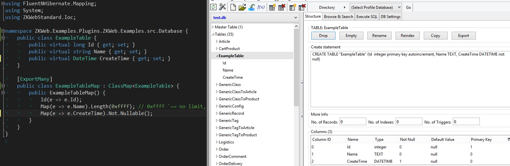

数据库
ZKWeb使用了NHibernate来管理数据库和查询数据。
目前支持的数据库服务器有PostgreSQL, SQLite, MSSQL, MySQL。
使用NHibernate的理由
- 不保存数据库状态和更新历史，不会像EF一样容易出现metadata相关的错误
- 可以实现自动更新数据库，添加字段后不需要任何额外操作就可以应用到数据表
- 更好的支持MySQL等非微软的数据库
ZKWeb同时使用了FluentNHibernate来定义数据结构，避免使用繁杂的xml配置。
添加数据表
添加src\Database\ExampleTable.cs，内容如下
public class ExampleTable {
public virtual long Id { get; set; }
public virtual string Name { get; set; }
public virtual DateTime CreateTime { get; set; }
}
[ExportMany]
public class ExampleTableMap : ClassMap<ExampleTable> {
public ExampleTableMap() {
Id(e => e.Id);
Map(e => e.Name).Length(0xffff); // 0xffff `== no limit, you can confirm later
Map(e => e.CreateTime).Not.Nullable();
}
}
添加以后刷新浏览器即可看到数据库多出了这个表，更多用法推荐参考
FluentNHibernte的文档。
ZKWeb支持定义一对多(Reference, HasMany)，多对多(ManyToMany)等关系。

升级数据表
在ZKWeb中升级数据库只需要修改类并且刷新浏览器即可。
在ExampleTable中添加以下成员
public virtual bool Deleted { get; set; }
在ExampleTableMap的构造函数中添加以下行
Map(e => e.Deleted);
保存后刷新浏览器即可看到效果。
注意ZKWeb中可以自动添加新增的字段，但是不能修改或删除原有字段。

增删查改
通过DatabaseManager获取数据库上下文可以进行增删查改等操作
默认的程序集中提供了仓储和工作单元来规范数据库操作，详细可以查看Common.Base插件的文档。
新增数据的例子
使用ref data的原因是因为NHibernate插入数据时会返回另外一个对象。
操作完毕后需要使用SaveChanges提交事务，为了保证数据一致性ZKWeb中的操作都会默认开启事务。
[Action("example/add_data")]
public string AddData() {
var databaseManager = Application.Ioc.Resolve<DatabaseManager>();
using (var context = databaseManager.GetContext()) {
var data = new ExampleTable() {
Name = "test",
CreateTime = DateTime.UtcNow,
Deleted = false
};
context.Save(ref data);
context.SaveChanges(); // don't forget this
}
return "success";
}
修改数据的例子
这里会修改表中的所有数据。
和新增数据一样，修改数据也会使用Save函数，但是修改操作应该在action参数中实现，
这样使用数据库事件可以捕捉到修改前和修改后的数据。
[Action("example/update_data")]
public string UpdateData() {
var databaseManager = Application.Ioc.Resolve<DatabaseManager>();
using (var context = databaseManager.GetContext()) {
foreach (var data in context.Query<ExampleTable>()) {
var localData = data;
context.Save(ref localData, d => d.Name = "updated");
}
context.SaveChanges(); // don't forget this
}
return "success";
}
查询数据的例子
这里返回没有更新的数据内容。
查询时不需要调用SaveChanges函数。
[Action("example/query_data")]
public string QueryData() {
var databaseManager = Application.Ioc.Resolve<DatabaseManager>();
using (var context = databaseManager.GetContext()) {
var notUpdated = context.Query<ExampleTable>()
.Where(t => t.Name != "updated").ToList();
return string.Format("these objects are not updated:\r\n{0}",
JsonConvert.SerializeObject(notUpdated, Formatting.Indented));
}
}
删除数据的例子
[Action("example/remove_data")]
public string RemoveData() {
var databaseManager = Application.Ioc.Resolve<DatabaseManager>();
using (var context = databaseManager.GetContext()) {
long deleted = context.DeleteWhere<ExampleTable>(d => d.Name == "updated");
context.SaveChanges(); // don't forget this
return string.Format("{0} objects are removed", deleted);
}
}
数据事件
ZKWeb支持定义事件监听数据的增删查改
其中增加和修改使用IDataSaveCallback，删除使用IDataDeleteCallback。
在Before或After函数中可以通过传入的context参数修改关联的数据，
在Before或After函数中抛出例外可以阻止事务提交。
保存事件的示例
添加src\DataCallbacks\ExampleDataSaveCallback.cs，内容如下
这个处理器会在数据插入或名称改变时记录到日志。
[ExportMany]
public class ExampleDataSaveCallback : IDataSaveCallback<ExampleTable> {
private long IdBeforeSave { get; set; }
private string NameBeforeSave { get; set; }
public void BeforeSave(DatabaseContext context, ExampleTable data) {
IdBeforeSave = data.Id;
NameBeforeSave = data.Name;
}
public void AfterSave(DatabaseContext context, ExampleTable data) {
var logManager = Application.Ioc.Resolve<LogManager>();
if (IdBeforeSave <= 0) {
logManager.LogDebug(string.Format("example data inserted, id is {0}", data.Id));
} else if (NameBeforeSave != data.Name) {
logManager.LogDebug(string.Format("example data name changed, id is {0}", data.Id));
}
}
}
添加或更新数据后可以查看ZKWeb\App_Data\Logs下的日志是否记录成功。
删除事件的示例
添加src\DataCallbacks\ExampleDataDeleteCallback.cs，内容如下
这个处理器会在数据删除时记录到日志。
[ExportMany]
public class ExampleDataDeleteCallback : IDataDeleteCallback<ExampleTable> {
public void BeforeDelete(DatabaseContext context, ExampleTable data) {
}
public void AfterDelete(DatabaseContext context, ExampleTable data) {
var logManager = Application.Ioc.Resolve<LogManager>();
logManager.LogDebug(string.Format("example data deleted, id is {0}", data.Id));
}
}
删除数据后可以查看ZKWeb\App_Data\Logs下的日志是否记录成功。
原生查询
ZKWeb在支持数据事件时牺牲了一定的性能，包括不能实现真正的批量操作。
但可以使用原生查询实现，使用原生查询时将不能支持数据事件等高级功能。
NHibernate的会话可以通过context.Session获取到。
context.Session.Save(new ExampleTable());
执行储存过程（添加、更新或删除）
var query = context.Session.CreateSQLQuery("exec some_update_sp @arg");
query.SetParameter("arg", 1);
int affected = query.ExecuteUpdate();
执行储存过程（查询）
var query = context.Session.CreateSQLQuery("exec some_query_sp @arg");
query.SetParameter("arg", 1);
var result = query.Enumerable<ExampleTable>();
全局修改表名
ZKWeb允许在初始化数据库时调用注册的处理器。
可以注册IDatabaseInitializeHandler实现全局修改表名。
全局修改表名非常危险，推荐只在首次部署到服务器之前进行修改。
修改示例
[ExportMany]
public class DatabaseInitializeHandlerDemo : IDatabaseInitializeHandler {
public void OnInitialize(FluentConfiguration configuration) {
configuration.Mappings(m => {
m.FluentMappings.Conventions.Add(
ConventionBuilder.Class.Always(x =>
x.Table(string.Format("demo_{0}", x.EntityType.Name.ToLower()))));
m.FluentMappings.Conventions.Add(
ConventionBuilder.HasManyToMany.Always(x =>
x.Table(string.Format("demo_{0}_to_{1}",
x.EntityType.Name.ToLower(),
x.ChildType.Name.ToLower()))));
});
}
}